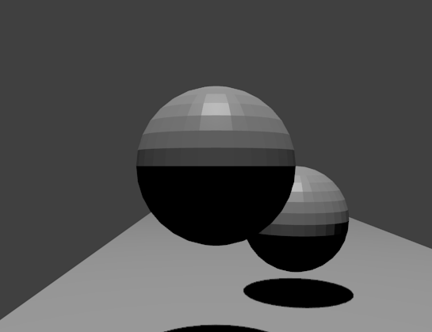

Assignment 1 - Setting The Scene

Camera Information
- Position: (-0.75, 1.25, 8.0)
- Lookat: (0.0, 0.0, -1.0)
- Up: (0.0, 1.0, 0.0)
Object Positions
- Plane: (0.0, 0.0, 0.0)
- Foreground Sphere: (-0.75, 1.25, 5.0)
- Background Sphere: (0.0, 0.75, 3.5)
Object Scales
- Plane: (2.5, 1.0*, 5.0)
- Foreground Sphere: (0.5, 0.5, 0.5)
- Background Sphere: (0.5, 0.5, 0.5)
*The plane has no height, so scaling in the Y direction has no effect